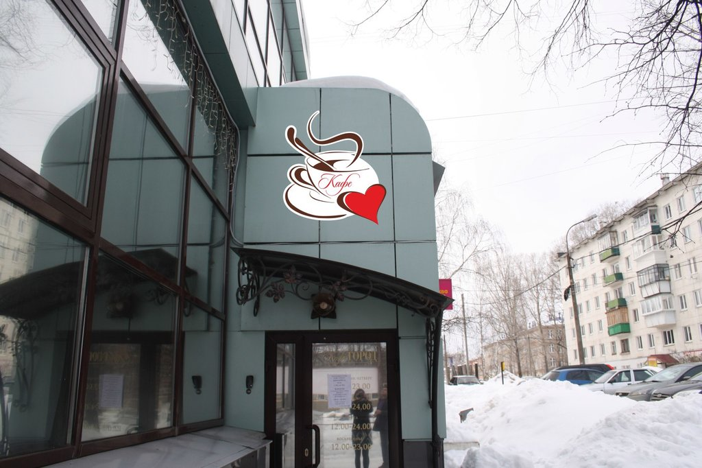

Позвонить
Уточните подробности по телефону кафе.
Кафе «Город» в Чайковском. Загляните во время прогулки или позвоните, чтобы уточнить детали визита.
«Город» — кафе в Чайковском по адресу улица Ленина, 36/2с2.
Позвоните перед визитом, чтобы уточнить актуальную информацию. Откройте карту, чтобы построить маршрут до кафе.
Выберите действие — позвонить в кафе или посмотреть маршрут.
Уточните подробности по телефону кафе.
Откройте адрес в Яндекс Картах.
Свяжитесь с кафе, чтобы узнать актуальную информацию.
Кафе находится в Чайковском по адресу улица Ленина, 36/2с2.
Позвоните по номеру +7 (922) 327-97-67.
